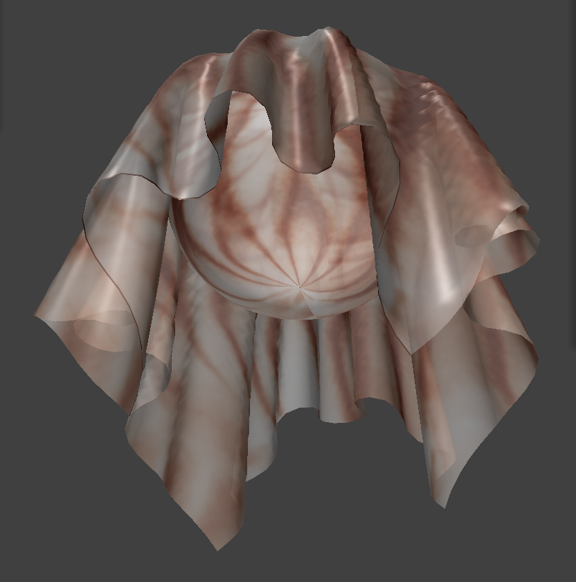
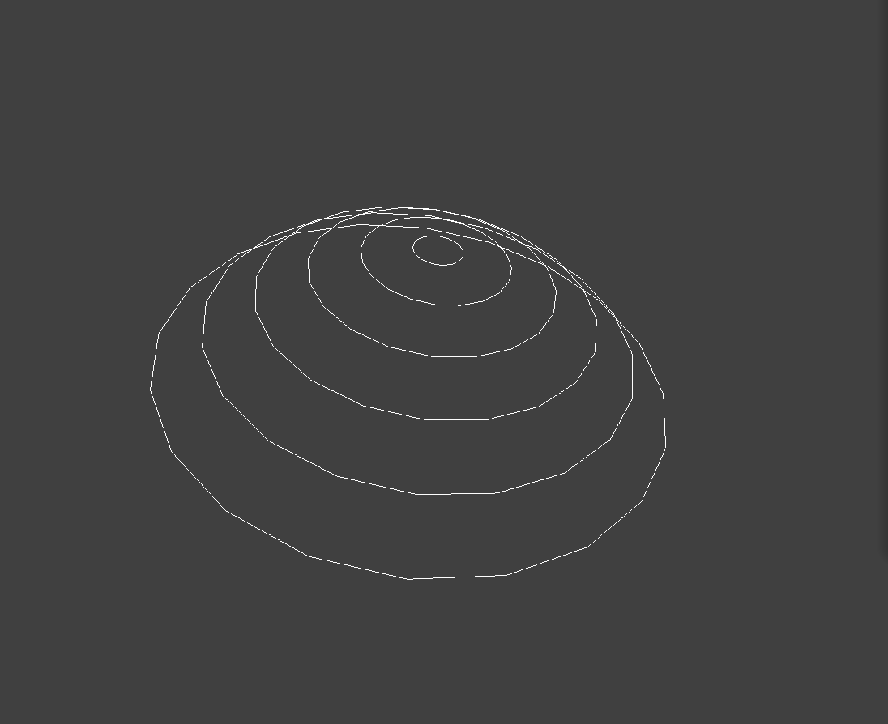

Summary: Our project is to render an animated simulation of jellyfish movement in water through two broad goals: create a shader replicating the appearance of a jellyfish in water and to create a spring-mass model to represent the muscles and membrane of the jellyfish. So far, we have written a translucency shader featuring silhouette enhancement, in addition to a nice texture map for jellyfish. We have also created a spring-mass frame for the top cap of a jellyfish.
Preliminary results
Below, we show the results from our custom shader. Translucency was achieved through allowing light to pass through a surface. Our shading term combined Phong shading with two new terms: diffuse translucency, which is analogous to the diffuse term in Phong shading, and forward-scattering translucency, which is analogous to specular shading. The ability to see through the cloth model was achieved through reducing the alpha term of the color vector. Lastly, we implemented silhouette enhancement, which increased the opacity of the surface at the edges of the object relative to the camera angle.

|
 |
Additionally, we began constructing the basic model for the jellyfish using the existing code structure from the Clothsim project. We edited Cloth::buildGrid() so that it would create point masses and springs for the circular cap of the jellyfish. We initialized the pointmasses in layers of rings so that the pointmasses appear as concentric circles in the x-y plane and used a parabolic function in the z-direction. We ran into trouble with rendering the mesh as we needed to edit the initialization of the triangles and half edge structures as well. We added structural springs along each ring to provide support for the jellyfish.
|  |

|
Progress
We've made good progress in simulating the appearance of the jellyfish membrane, but could extend our current implementation to create a jellyfish surface that looks more voluminous and scatters light from the environment. We were able to get a good start to the frame of the jellyfish model by constructing the jellyfish cap. We will continue to construct the spring structure to include shearing and bending springs along the vertical axes of the cap as well. Now that we have the basic strucutre, we plan to add the tentacles of the jellyfish as rectangular cloths hanging from the cap.
Updated work plan
Week 3: Improve shader and cloth model for jellyfish
- Create shader that supports a voluminous jellyfish membrane.
- *plan*
Week 4: Implement aspirational goals, debug, create demos
- Implement subsurface scattering for the jellyfish shader and implement a background shader to simulate movement in the ocean and sunlight passing through water.
- *plan*
Resources
- Rudolf, D., & Mould, D. (2010). An Interactive Fluid Model of Jellyfish for Animation. In A. Ranchordas, J. M. Pereira, H. J. Araújo, & J. M. R. S. Tavares (Eds.), Computer Vision, Imaging and Computer Graphics. Theory and Applications (pp. 59–72). Springer Berlin Heidelberg.
- Cloth simulation with aerodynamic forces: https://cseweb.ucsd.edu/classes/wi17/cse169-a/slides/CSE169_11.pdf
- Jellyfish physics facts and simulations: https://www.katexagoraris.com/jellyfish-physics-facts-and-simulat
- Project 4 ClothSim codebase
- Physics of jellyfish locomotion & footage of jellyfish: https://www.youtube.com/watch?v=MmqfrJgakH4
- Miles, J. G., & Battista, N. A. (2019). Naut Your Everyday Jellyfish Model: Exploring How Tentacles and Oral Arms Impact Locomotion. Fluids, 4(3): https://doi.org/10.3390/fluids4030169